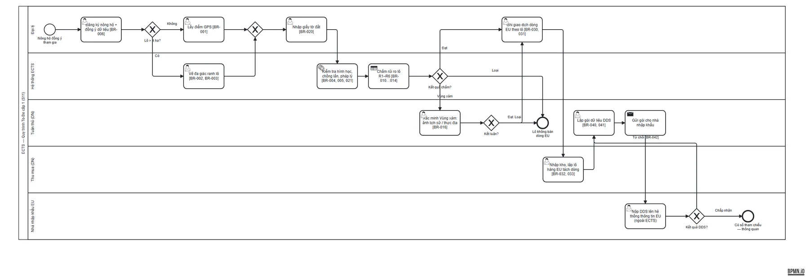
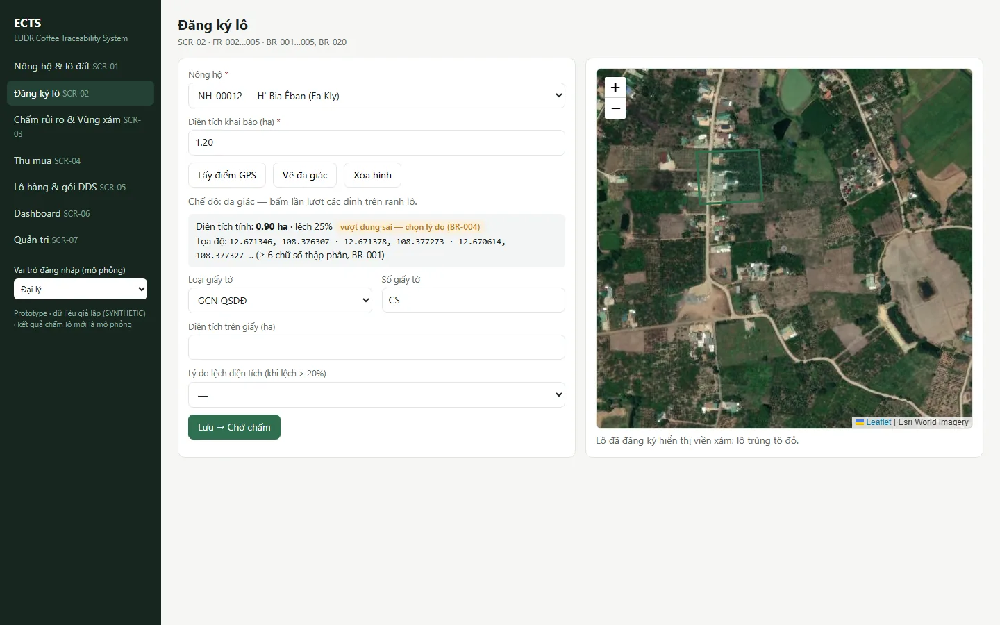
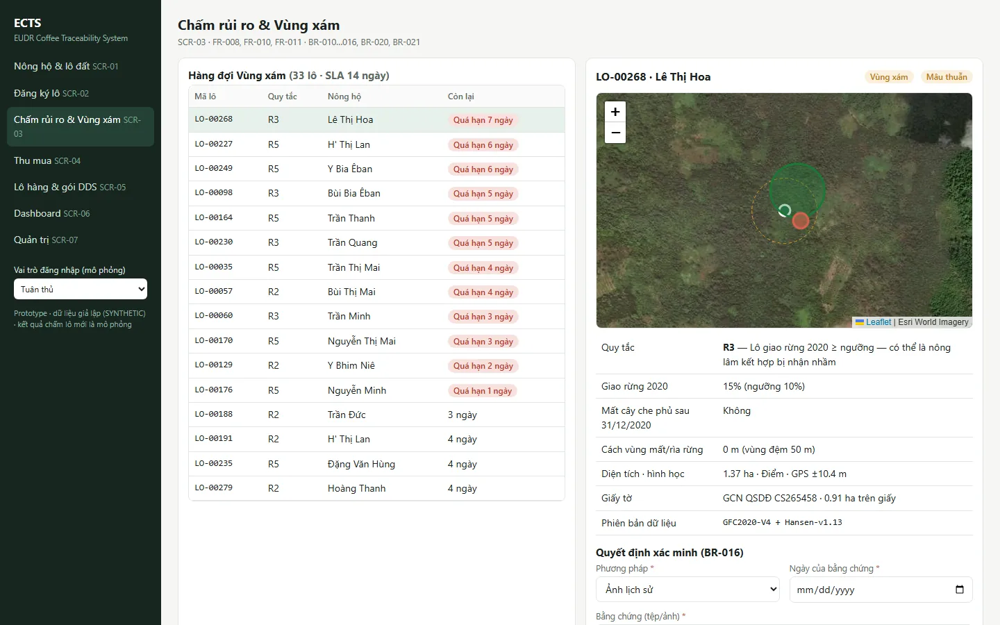
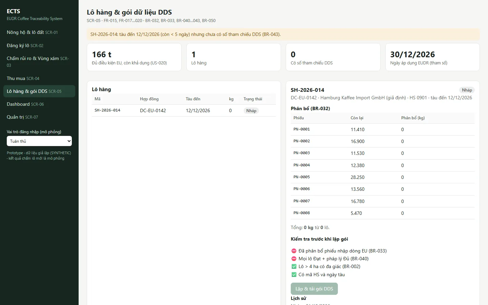

A legal deadline meets a supply chain without data
The EU Deforestation Regulation applies to large and medium operators from 30 December 2026. Every bag of coffee entering the EU must come from land not deforested after 31 December 2020, be legally produced, and be covered by a due diligence statement (DDS) listing the geolocation of every plot.
Most Vietnamese Robusta comes from farms of one or two hectares, passed through traders and agents who mix beans from dozens of households. Nobody in that chain records where each bag was grown.
Business objectives
- Keep EU market access by producing complete, verifiable plot data for each shipment.
- Decide what to build, and whether it pays back, before the deadline.
Start from the law, then distrust the data
Most EUDR content online is secondary commentary. I worked from the official texts — the 2023 regulation, the December 2025 amendment and the 2025 country benchmarking act — and extracted 40 obligations into a requirements matrix. Its verbatim column is filled by a script that stops if a quoted phrase is missing from the official text.
Reading the primary text changed the design three times
| Finding | Source | Design impact |
|---|---|---|
| Vietnam is classified low-risk | Benchmarking act; Art. 13 | No formal risk mitigation, but every plot still needs geolocation and verifiable evidence (Art. 9). |
| The exporter is not the "operator" | Art. 7 | My first idea — "the system submits the DDS to the EU" — was legally wrong. The system prepares a DDS data package for the EU importer. |
| Agroforestry is not forest | Art. 2(6) | Coffee grown under shade trees must not be flagged as deforestation. |
The gap analysis scored 14 obligations as not met, 12 as partly met and 14 as needing interpretation. The largest gaps: no plot coordinates, mixing across supply-chain tiers, no verifiable evidence, undigitised land documents and no data channel to the importer.
Satellite data: useful for screening, not for deciding
Public satellite data shows 15,873 ha of tree cover lost in Đắk Lắk in 2021–2025, 48% less than in 2016–2020, with five districts holding 80% of the loss. But "tree cover loss" counts every tree over five metres, including shade trees and old coffee being replanted — not deforestation under EUDR. In the core coffee district, 99.9% of the loss is agricultural.
I therefore used the district index only as a screening indicator and moved the real decision to plot level.

Requirements that trace from article to test
The SRS follows ISO/IEC/IEEE 29148: 24 functional requirements, 28 business rules in EARS form and 12 non-functional requirements, backed by 31 user stories with 58 acceptance criteria.
Example rules
| Rule (paraphrased) | Why it matters |
|---|---|
| WHEN a plot is larger than 4 ha, THE SYSTEM SHALL require a polygon instead of a point. | The regulation requires polygons for larger plots. |
| WHEN satellite sources disagree about a plot, THE SYSTEM SHALL place it in a gray zone that cannot enter a DDS package until verified. | Avoids both false approvals and false rejections. |
| WHEN an analyst decides a gray-zone plot, THE SYSTEM SHALL require attached evidence, within a 14-day target. | Decisions must be auditable by the importer. |
| WHEN a plot is not eligible, THE SYSTEM SHALL block purchases from it into the EU stream. | Keeps non-compliant beans out of EU shipments. |
Requirements, stories, criteria and tests live in data files. A build script generates the traceability matrix and fails if any unmet EUDR obligation does not reach a test case; the same script fills the requirement tables in the SRS, so the document cannot drift from the data.
ECTS: five capabilities around the plot
Plot registration, plot risk screening, purchase recording, DDS data package and dashboard/audit. The to-be process puts the plot at the centre: once registered and screened, it can be reused for every shipment.




Deliverables
- Discovery — BACCM, PESTLE, stakeholders, personas, root cause
- Regulatory matrix — 40 obligations with gap scores
- Data — inventory, district risk analysis, critique
- Process — BPMN to-be and RACI
- SRS — 24 FR, 28 rules, 12 NFR
- Backlog — story map, DoR/DoD, release plan
- Design — screen spec, ERD, state, sequence, permissions
- Test — 88 test cases, RTM, UAT
Proven complete, then priced
Business case Projected
For a fictitious exporter (30,000 t/year, 45% to the EU), three options over three years:
| A. Build | B. Rent SaaS | C. Consortium | |
|---|---|---|---|
| 3-year NPV, likely (USD m) | 3.46 | 4.43 | 4.04 |
| Weighted score, exporter / farmer view | 2.95 / 3.15 | 3.65 / 3.15 | 4.30 / 4.50 |
Recommendation: rent SaaS now — the only option that can go live before the deadline — with a contractual data-export clause, then move to a consortium where farmers register plots once for all buyers. The analysis also states when not to invest: below a price penalty of about 1.2–1.6%, or an EU share below 3–5%, no option pays back.
What this case shows
- Primary sources change designs. Summaries missed the amendment, the low-risk classification and the operator definition — each changed what the system must do.
- Data needs a critic. Treating tree-cover loss as deforestation would have flagged the wrong districts; the analysis says what the data can and cannot prove.
- Next step I would take: talk to an EU importer first. The weakest assumption in the model is the price penalty, and one conversation would tighten it more than any calculation.